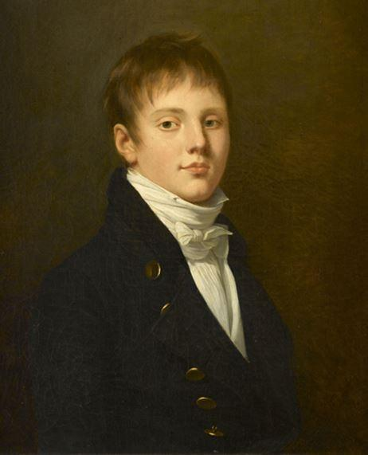
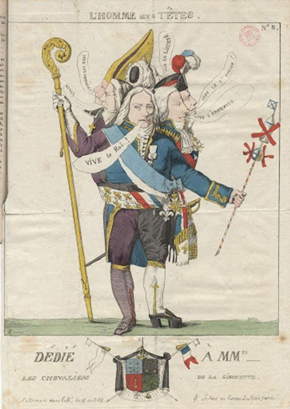

C’est bien plus qu’un roman que nous offre Sylvie Yvert avec « Une année folle » paru en 2019 aux éditions Héloïse d’Ormesson. Cette année « folle » est celle des « cent jours » en 1815, l’année du retour de Napoléon de l’île d’Elbe. Une des années les plus extravagantes de l’histoire de France. Sylvie Yvert illustre cette année bouleversante en nous contant les aventures de deux couples, celui d’un militaire et celui d’un haut fonctionnaire.
Ces couples vont traverser le tumulte de 1815 avec des fortunes diverses pour finir en drame.
Sylvie Yvert est l’auteur d’une biographie de la duchesse d’Angoulême, la fille de Louis XVI et de Marie-Antoinette « Mousseline la sérieuse » seule survivante de la famille royale enfermée à la prison du Temple. On s’attendait donc après ce premier ouvrage époustouflant à un livre riche en détails historiques, le contrat est rempli : les références sont nombreuses, précises et minutieuses, méticuleuses pourrait-on presque écrire…
Sylvie Yvert a fouillé les coins et les recoins de la vie de chacun des protagonistes de son ouvrage, épluchant leurs écrits, leurs correspondances. Curieusement, la romancière, qui nous offre à foison un luxe de détails, ne donne pas, tout au long du roman, le patronyme des deux héros principaux. Elle ne le fera qu’à la fin de l’histoire, lorsque tout sera consommé ou presque.
L’amateur éclairé sur l’époque napoléonienne devinera plus ou moins rapidement de qui il s’agit, tandis que le néophyte sur la période tâtonnera quelque temps avant de mettre un nom sur le jeune et brillant officier qui paiera de sa vie sa fidélité à l’Empereur, sa fidélité à la France, selon lui.
Ce n’est pas faire acte de trahison comme les deux héros en furent accusés que de dévoiler le nom de ces fidèles de l’Empereur. Cela n’enlèvera rien au plaisir de la lecture, d’autant que les patronymes et la lignée de leurs épouses sont donnés presque au début de l’ouvrage. N’importe quel lecteur un peu avisé trouvera rapidement les noms des accusés en fouillant l’Internet. La lecture s’en poursuivra avec plus d’intérêt et de richesse historique.
Une loi d’amnistie fut promulguée par Louis XVIII le 12 janvier 1816, mais le jeune et brillant officier fut fusillé dans la plaine de Grenelle le 19 août 1815. Le conseil de Guerre avait débuté cinq jours plus tôt le 14 août 1815 pour juger Charles Huchet de la Bédoyère, comte, promu général de brigade par l’Empereur. Charles avait accompagné le Maréchal Lannes en 1808 se rendant en Espagne où il se couvrit de gloire :
« Charles ne se plaint pas. Comment le pourrait-il quand le chef suprême lui-même donne l’exemple ? Parvenu au col, Napoléon remonte en selle. Soudain son cheval glisse et l’envoie rouler sur le sol verglacé. « Foutu métier ! » s’exclame-t-il. Puis il enfourche à nouveau son cheval. C’est pour cette exemplarité que les grognards l’adorent. » p47
Charles de la Bédoyère fut blessé à plusieurs reprises sur les champs de bataille où il commença sa carrière comme simple soldat. Ses faits d’armes débutèrent à la campagne de Prusse, il s’illustra à Ratisbonne, fit la campagne de Russie et finit aux côtés de l’Empereur à Waterloo ; cette « morne plaine » où des combattants français, face au désastre choisirent de se donner la mort :
« Après la fin de cette boucherie, on trouve encore des officiers et des soldats qui se font sauter la cervelle, choisissant la mort plutôt que la souillure. » p189
L’administrateur, plus âgé que le brillant officier ne s’attendait assurément pas à être condamné à mort. Il le fut pourtant. Les épouses de chacun épuisèrent tous les recours, toutes les démarches possibles auprès de Louis XVIII, de ses ministres et des proches du monarque pour sauver la vie de leurs maris respectifs. Quelques jours avant l’exécution de La Bédoyère, c’est l’ancien Directeur général des postes, Antoine-Marie Chamans, comte de Lavalette, qui est arrêté, le 12 juillet 1815. Il est condamné à mort le 21 novembre. Antoine était de dix sept ans l’ainé de Charles. Il fut Directeur Général des Postes (équivalent à Ministre) durant quatre ans et reprit ce poste durant les cent jours. Il fut également militaire dans sa jeunesse, aide de camp de Bonaparte après la bataille d’Arcole en 1796, il suivit l’Empereur en Égypte juste après avoir épousé Émilie de Beauharnais qui était la nièce de… Joséphine de Beauharnais !
Le tableau est dressé, il ne reste plus qu’à savourer les 365 pages d’aventures d’une écriture fine et talentueuse. Chaque chapitre est consacré en alternance tantôt à l’un, tantôt à l’autre des deux protagonistes. Mais qu’ils nous content les aventures de Charles ou celles d’Antoine, tous sont chargés d’histoire, de références à des lieux, à des dates, à des paroles échangées. Les auteurs qui furent les témoins de l’époque, les mémorialistes, sont abondamment cités -Chateaubriand, Stendhal…
On a parfois l’impression que la biographe a un parti pris pour les deux personnages qui constituent trame de l’ouvrage et que son écriture est une plaidoirie où la parole est le plus souvent à la défense qu’à l’accusation. Ce parti pris n’en rend la lecture que plus attrayante !
Durant « le vol de l’aigle », de clocher en clocher jusqu’aux tours de Notre Dame, Grenoble et ses environs furent un point charnière où les choses se sont jouées à quitte ou double durant trois jours.
Lorsqu’un officier d’ordonnance de Napoléon arrivant au galop s’adresse aux hommes chargés de stopper la marche de Bonaparte : « L’Empereur va marcher vers vous. Si vous faites feu, le premier coup de fusil sera pour lui. Vous en répondrez devant la France. » Là, quand Napoléon parut devant la troupe, redingote ouverte et poitrine offerte, se joua le destin de la France.
C’est là que l’auteur dévoile tout son talent. Sylvie Yvert ne cache rien du ralliement de La Bédoyère : ce dernier va apporter à l’Empereur une quantité d’hommes qui va être multipliée par cinq ! La romancière ne néglige pas la réalité objective de l’histoire, mais usant avec magie de sa plume romantique, elle anoblit le ralliement de La Bédoyère. Car le sept mars 1815, c’est tout un régiment que Charles apportera à Napoléon. Certes l’officier romantique a montré sa fidélité à l’Empereur, mais ses ordres étaient bien d’arrêter le vol de l’Aigle.
C’est bien un acte de trahison militaire qu’a accompli Charles de la Bédoyère.
Ce dernier fut fusillé en montrant un courage exemplaire. Sort funeste qu’il aurait pu éviter. Une fuite était possible ; elle était d’ailleurs prévue. Mais l’idéaliste amoureux voulait embrasser sa femme et revoir son jeune fils une dernière fois. Il était muni d’un passeport lui permettant de se rendre aux Amériques, passeport que Fouché lui-même lui aurait signé. Charles avait déclaré à plusieurs reprises qu’il savait qu’il serait le premier fusillé.
Il n’y a rien de très étonnant à cette époque qu’un changement de cap, d’orientation ou d’idée politique se manifeste pour quiconque possède un sentiment de la chose publique. Pour quiconque occupe un poste de responsabilité. Pendant cette courte période qui durera un peu plus d’une année, la France aura vu tour à tour l’Empire, un court passage de la royauté avec le retour de Louis XVIII, de nouveau l’Empire après le débarquement à Golfe-Juan, puis le retour de la royauté !
« Dans les boutiques, les emblèmes royaux sont remplacés derechef par des aigles ; sur les journaux comme sur les mottes de beurre, les fleurs de lys ont disparu. Les rues, débaptisées depuis un an, sont rebaptisées de leur ancien nom. » p141
À propos des nombreux revirements, Sylvie Yvert n’omet pas de citer « Le dictionnaire des girouettes » œuvre collective qui parut en 1815 et recense plusieurs centaines de « girouettes » ; c’est d’ailleurs en 1815 que le terme vit le jour pour la première fois dans le journal « Le nain jaune. »
Comment mieux décrire l’ambiance générale qui était celle de la France et de la Cour en particulier, que ne le fait Sylvie Yvert d’une manière rythmée et élégante, en une danse légère et cadencée ?
« Aux Tuileries, une odeur poudrée remplace l’odeur de la poudre. À cette époque plus personne ou presque n’est républicain. Débute alors un ballet du pouvoir unique dans l’histoire, où la France, ne sachant plus à quel saint se vouer, change fréquemment de cavalier, porte tantôt l’aigle ou l’abeille à la boutonnière, tantôt le lys ou le ruban blanc. Se joue donc, quinze mois durant, une pièce de boulevard où les portes s’ouvrent et se ferment, où l’on prend les mêmes, dans un ordre différend à chaque acte, pour reproduire une mise en scène identique, réglée par une chorégraphie similaire. » p85
Les changements de cap et d’opinion furent plus spectaculaires lors de la période des « cent jours. » On apprend dans l’ouvrage l’origine de l’expression « Les cent jours », née presque par hasard, dans la bouche du préfet de la Seine accueillant Louis XVIII :
« Sire, cent jours se sont écoulés depuis le moment fatal où Votre Majesté a quitté sa capitale au milieu des sanglots, et s’est vue forcée par une cruelle nécessité d’abandonner ses enfants bien-aimés » p225
Sous la plume de cette fine chroniqueuse de l’histoire, la lecture se partage entre le plaisir descriptif du paysage politique, son ambiance délétère et les aventures des deux héros. Aventures qui prennent un tour rocambolesque lorsque l’on suit le parcours d’Antoine-Marie Chamans, comte de Lavalette.
Nous l’avons vu condamné à mort le 21 novembre 1815. Il est enfermé à la Conciergerie, d’où personne ne s’est jamais échappé. Il ne sera pourtant pas exécuté ; la veille de son exécution il s’évadera, avec la complicité de sa femme et de sa fille ! Son épouse lui rendait visite fréquemment et avait envisagé pour lui un plan d’évasion qu’il refusera dans un premier temps et finira par accepter in extrémis. C’est travesti avec les habits de son épouse, accompagné par sa fille, Joséphine, que le Comte de Lavalette quittera la Conciergerie. Un complice l’attendait à l’extérieur, dans la voiture hippomobile.
Antoine séjournera caché en plein Paris, dans les mansardes d’un ministère, puis il sera exfiltré quelques semaines plus tard et gagnera la Belgique avec la complicité de trois officiers anglais.
Il rejoindra ensuite la Bavière où il séjournera plusieurs années.
Il sera gracié sous Louis XVIII en 1822 et regagnera Paris où il s’occupera de sa femme, devenue folle.
Il mourra d’un cancer du poumon en 1830, sous Charles X.
Charles de la Bédoyère et Antoine-Marie de Lavalette furent plus ou moins « officieusement » réhabilités. Ont-ils servi la France ou leur chef ? Furent-ils des traitres au Royaume ou furent-ils fidèles à l’Empire ? Sylvie Yvert répond de façon magistrale en citant Rivarol :
« Le plus difficile en période troublée, disait Rivarol, ce n’est pas de faire son devoir, c’est de le connaitre » p113
Antoine fit partie du « cabinet noir » de l’empereur, il n’a pas attendu d’être nommé par Napoléon à la Direction des Postes, mais l’a anticipé de lui-même. Il fut soupçonné d’avoir participé à une conspiration avec les généraux Drouet et Desnouettes.
Charles rentra de Waterloo dans une des deux voitures qui escortèrent l’empereur. Sans le ralliement de son régiment le vol de l’aigle n’aurait peut-être pas gagné Notre Dame.
Coupables oui, mais coupables de quoi au juste ?
Si la gare de Waterloo était située à Paris et non à Londres il n’y aurait eu ni procès ni tribunal pour Charles et Antoine ; les tribunaux auraient accueilli et jugé d’autres braves et d’autres cœurs fidèles.

Partager cette page